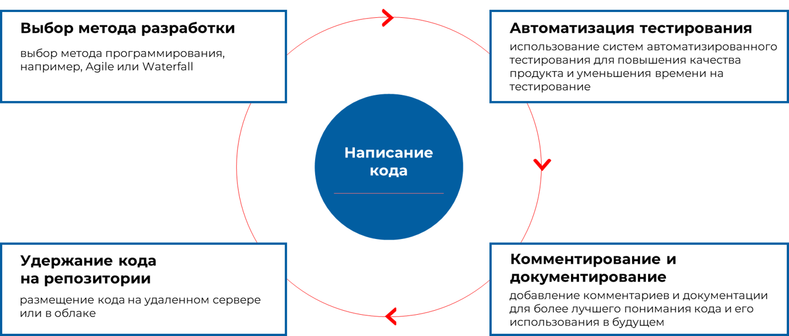
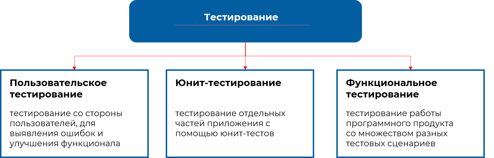

3/10
Разработка программного обеспечения – это сложный процесс, требующий внимания к деталям. Рассмотрим его этапы по порядку.
Анализ требований – первый этап разработки программного обеспечения. Задача разработчиков состоит в осознании требований заказчика и оценке реализуемости проекта. Если проект не востребован или невозможно его реализовать, лучше его закрыть.
Иногда требуется итеративная работа с заказчиком для разработки, корректировки концепции, пока не достигнуто соответствие требований и затрат.
В процессе анализа требований выполняется их разработка. Заказчикам нередко сложно определить свои нужды или они противоречат возможностям разработчиков. Этот этап помогает выявить потребности заказчика и согласовать требования. Если не удается найти эффективное техническое решение, проект закрывается или замораживается.
При успешном нахождении решения, переходим к проектированию. Задача этого этапа – определить высокоуровневую архитектуру, которая удовлетворит потребности заказчика. После проектирования архитектуры проект повторно проверяется, чтобы убедиться в его реализуемости. Рекомендуется убрать лишние функции для оптимизации проекта.
Далее переходим к этапу разработки. При масштабных проектах разработка может происходить поэтапно, начиная с самых важных функций. Это позволяет устранить основные ошибки и обеспечить стабильность системы.
Тестирование программного обеспечения – необходимый процесс при разработке, в ходе которого выявляются все проблемы в функционировании программного обеспечения. Какими бы хорошими ни были программисты, ошибки всегда будут, поэтому необходима регулярная проверка.
На этапе развертывания осуществляется проверка системы в реальных условиях, а затем она вводится в эксплуатацию.
Система может поддерживаться и исправляться в течение гарантийного срока – это этап технической поддержки. При достижении стадии вывода из эксплуатации, заказчик может не позволить продолжить сопровождение системы.